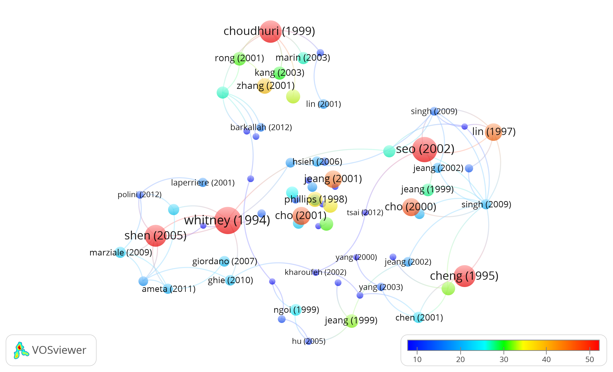
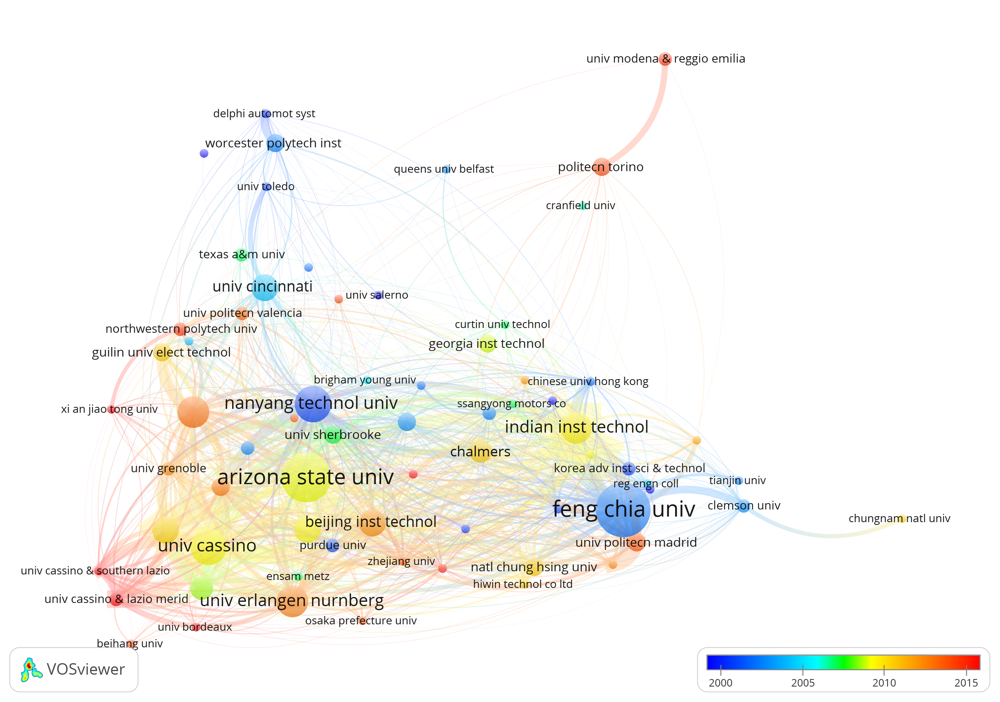

Citation Co-author Network
(All from Google Scholar, Python and D3 visualization library)
Paper Citation Network
Red circles are Gaurav's paper, blue are paper citing Gaurav's paper; Size of circle represents citation numbers; Only papers with a minimum citation limit are showing their first author and year
Arranged according to publication year
Tolerance Research Network

